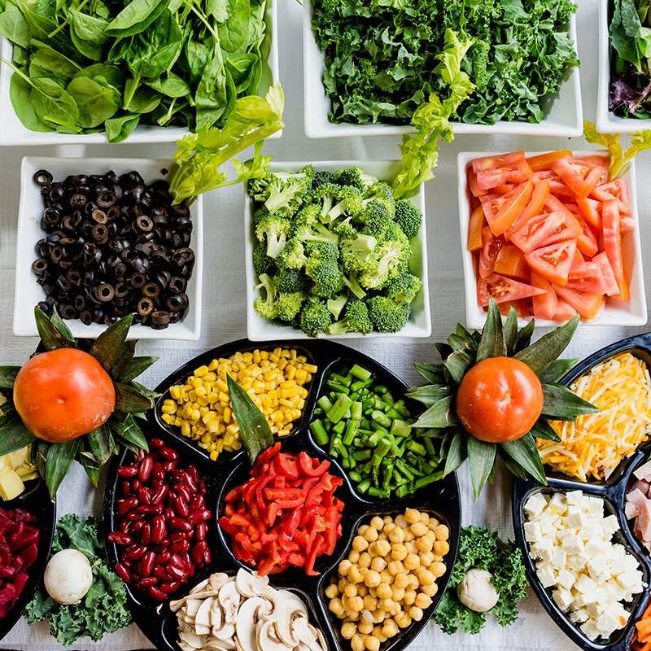

You know how to lose weight. Let's not play around. You know that you need to burn more fuel than you consume, making your body use fuel from fat cells. That doesn't mean it's easy to do, nor does that mean that all methods of weight loss are ideal for health or athletic performance. This page will help you maintain optimal athletic performance while losing weight, as well as help make it more manageable from a psychological standpoint.
However, you have to find your own motivation. Losing/cutting weight is a vile process at times, and worst of all for us, at the end of it, you get to step into a cage and fight somebody when all you want to do is eat ice cream.
There are many strategies to losing weight, and the best one for you is the one that will allow you to focus on your training, and notice as few changes in your life caused by diet as possible. With that said, a weight loss diet is just a way of hacking your body to achieve a sufficiently low-glycemic state to trigger the release of a variety of hormones that result in a net loss of fat from long-term storage, while affecting your daily life as little as possible.
In the first section, we'll talk about how much of each type of food to eat. Then in the second section, we'll talk about what specific foods you can eat to fulfill the totals we talk about in the first section. Lastly, we'll talk about diet structure, and when to eat.
How Much To Eat
If you're in a hurry, here it is: eat a number of grams of protein and carbohydrates equal to your bodyweight in pounds, and eat half that number in grams of fat. So if you weigh 200lbs, eat 200g protein, 200g carbs, and 100g fat per day. That will give you 2,500 calories, and if you're training regularly, that should put you in a calorie deficit while maintaining sufficient carbohydrates to fuel training, and sufficient protein to stay full and maintain muscle mass.
Simple!
Now let's talk about how we arrived at these numbers, why I recommend this general macronutrient breakdown, and how you can make these numbers more precise relative to your specific needs.
BMR is short for Basal Metabolic Rate, which represents how many calories you burn on a daily basis, separate from activity level or training. This is a handy thing to know if you want to tailor your nutrient intake to your specific needs, as well as predict how quickly you will lose weight, which is also important since we're working on a deadline here (your competition date isn't typically negotiable).
Here is a handy calculator for finding your BMR:
Basal Metabolic Rate
This is the amount of calories you burn on a daily basis, on average. Remember that this is highly generalized, and your energy expenditure will change from day to day, but this is a good way to build a base for your nutrition strategy. Listen to your body, monitor results, and adjust accordingly. Now that we have these values, let's talk about what to do with them.
You'll always want to start by consuming a gram of protein for each pound of bodyweight you have. This is a tried and true amount of protein for maintaining optimal muscular recovery. Additionally, protein is the number one macronutrient for satiety (feeling full). There are many reasons why high-protein is a great way to go for both athletic performance and weight loss.
Macronutrients, as a recap, are the nutrients from which your body derives fuel; they give you calories. The macronutrients are carbohydrates, fats, and protein. Carbs and protein provide 4 calories per gram, and fats provide 9 calories per gram. So multiply your grams of protein (your bodyweight in pounds) by 4, and that is the number of calories you'll be consuming daily from protein.
Arriving at the number of carbohydrates we consume daily is a little trickier. The more you train, the more carbohydrates you'll want to consume, because carbs are the body's go-to fuel source for high-intensity activity. Likewise, if you have a very active job, you'll want to consume relatively more carbohydrates. If muscle mass constitutes a larger percentage of your body mass than average, you'll again want to consume slightly more carbohydrates.
Here are some figures to help you determine your carbohydrate needs:
| Activity | Macronutrient Usage |
|---|---|
| Sleeping | Fat: 45% Protein: 35% Carbs: 20% |
| Sitting / Standing | Fat: 40% Protein: 30% Carbs: 30% |
| Walking | Fat: 35% Protein: 30% Carbs: 35% |
| Physical Labor | Fat: 30% Protein: 30% Carbs: 40% |
You may have to play around with your overall carb intake. I recommend you start with a carbohydrate intake equal to your protein intake, adjust based on the information above, and go from there. If you're skinny and sedentary, bring the carbs down. If you're jacked and you work construction, bring the carbs up. Like I said at the beginning, the key factor in your diet is how effectively it limits blood glucose levels in order to make your body use fuel from body fat stores, and blood glucose is affected mainly by the carbohydrates you consume. Too much, and you'll have a hard time losing weight. Too little and you'll feel sluggish and under-recovered from training.
Your daily fat intake will rely on 2 things: how many carbs you're consuming, and how quickly you need to lose weight. In the macronutrient structure I'm suggesting, fats will be your primary fuel source at all meals that aren't directly before or after training. The amount of fats you consume will largely determine how quickly you lose weight.
Check it out; you know your adjusted BMR, so you know roughly how much energy you'll be using on a daily basis. If you haven't used the post-workout calculator on the "General Nutrition" page, I recommend you check that out to find how many calories you burn during training. Click Here.
So by combining your adjusted BMR with your training calories burned, you know how many calories you burned in a day!
So now you know how many calories you burned in a day, you know how many grams of protein and carbs you're consuming, so the only remaining variable is fat.
So let's again say you're a 200lb guy, and let's say your adjusted BMR was 2,400cal and you burned 600cal during training. We already know you're consuming 200g protein, and we'll say you're consuming 200g carbs as well. So you're consuming 1,600 of the 3,000 calories you'd need in order to meet your daily calorie needs. With this math, you have 1,400 calories remaining before you'd meet your daily calorie needs (which would mean you break even in calorie total, neither gaining nor losing weight).
Since fats provide 9 calories per gram, we can divide 1,400 by 9 to see that you'd need 156g fat to meet that total. That's a lot of fat! What we're going to do is bump that fat intake down in order to achieve a net calorie deficit, and lose weight!
So let's say again that you're going with my initial rough suggestion of 100g fat as a 200lb man. That means you're consuming a total of 2,500cal in the day, and you burned 3,000cal. Since a pound of body fat equates to 3,500cal (1 pound of body fat provides 3,500 calories), it will take you one week at this rate to burn one pound of body fat. This may sound very slow, but this is a good rate! A pound of pure body fat is a lot. So again, at this rate, you can figure that if you started your weight loss 12 weeks out and stuck to this diet plan, you could lose 12 pounds of body fat before your competition. Nice!
But again, this is all variable. If you need to lose weight quicker, you can adjust your fat intake down. You can adjust carbs too, but be careful with limiting carbs too much, as that will affect your training more than lowering the fats. And remember, we're going to take care of up to 10% of your bodyweight with the water cut too, so you don't need to diet all the way down to your competition weight.
Summary
- Eat a number of grams of protein equal to your bodyweight in pounds. 200lbs bodyweight = 200g protein.
- Eat roughly the same amount of carbohydrates, but the true number will be based on your activity level and the frequency, duration, and intensity of training.
- Eat about half that amount of fats. The true number will be based of of your BMR and the amount of carbs you eat, and this number will change the most based on how quickly you need to lose the weight.
You should now have a good idea of how much of each macronutrient you should be eating to lose weight and maintain performance. Now we'll talk about what kinds of food to eat.
What To Eat
You don't have to eat bland and boring foods. In fact, I encourage you to find foods and recipes that you enjoy throughout your weight loss process. If you don't like the food you eat, it will be tough to stick to the plan. In this section, I go over the basics of how to choose the right types of foods at the right times, but beyond some general guidelines, it's up to you what you eat.
To start it off, here's a list of possible foods for each category we've talked about. It's not a comprehensive list, feel free to choose from foods not on the list. Below the list is a link to AllRecipes.com. If you struggle to come up with recipe ideas, I recommend using their "search by ingredient" feature. Just pick the foods from the list that you want to include, enter them as ingredients to seach by, enter any ingredients you want to exclude, and away you go!
Protein
- Lean ground beef
- Bison
- Chicken
- Low fat Cottage Cheese
- Crab
- Egg whites
- Lean ham
- Salmon
- Shrimp
- Sirloin steak
- Top round steak
- Tuna
- Sardines
- Oysters
Carbs
- Beans
- 100% whole grain bread
- Rice (any)
- Corn
- Oatmeal
- 100% whole grain pasta
- Potatoes (any)
- Squash
- Quinoa
- 100% whole grain tortilla
- Apple
- Orange
- Melon
- Berries (any)
Fats
- Whole eggs
- Avocado
- Walnuts
- Almonds
- Chia Seeds
- Hemp Seeds
- Coconut oil
- Macadamia nuts
- Olive oil
Veggies
- Broccoli
- Asparagus
- Brussel sprouts
- Cabbage
- Carrots
- Cauliflower
- Celery
- Cucumber
- Green beans
- Bell pepper
- Lettuce
- Mushrooms
- Onion
- Spinach
- Tomato
- Zucchini
Clicking the above image will take you to AllRecipes.com where you can search recipes by ingredient. Click on the "ingredient search" button.
Protein
The key when choosing protein sources for weight loss is understanding the other nutrients that accompany your protein source. If you choose full-fat eggs as a protein source, you should know that you're getting nearly as much fat as protein. If you choose quinoa and black beans for protein, undertand that these foods are mostly starch. This is fine, as long as you're keeping track of all the macronutrients in the food.
Generally, you'd want to choose lean protein sources for weight loss. It's on you to keep track of the total grams of each macronutrient in each food source you choose. Other than that, protein sources will be generally interchangable in your diet plan, so choose whatever you like.
Fats
As with protein sources, the fats you choose will be generally interchangable; it doesn't necessarily matter what kinds of fats you eat at different times of day. As long as they're generally healthy fats, you'll be alright.
If you want an expanded explanation of fats, check out the "fats" section of the General Nutrition page.
Carbohydrates
This is the section that matters. It's important what type of carbohydrate you choose at different times of day, because different carbs will cause very different responses by the body. The key thing that we're trying to control is insulin response.
Fruit will be your go-to carbohydrate source for regular meals throughout the day. This is because the fructose carbohydrate found in fruit doesn't cause a significant insulin response. Fruit will provide you with what you need in order to keep the brain fueled, keep you from feeling sluggish and irritable, and it won't cause peaks and valleys in energy levels.
What's more, fruit has a good amount of fiber to help slow absorbtion rate of other nutrients, which helps you stay fueled longer and feel fuller. Fruit is generally low-calorie too. A cup of strawberries only has 12g carbs!
For meals that come after a significant training session, we want starches. These are your complex carbohydrates like rice, wheat, and potatoes. Since we deplete the body's stored carbohydrate reserves so much during intense training, we want to consume our largest carbohydrate meal after training. This is the place to load up! For 2 hours after training, the body is more insulin-sensitive, and will use carbohydrates very efficiently for replenishing important energy stores.
Roughly half of your overall carbohydrate intake should come from this post-workout meal. So if your daily carbohydrate allowance is 200g, you should get roughly 100g of carbs throughout the day collectively, and 100g in your post-training meal.
If you're very active through the day, you may want some non-fruit carbs in your regular meals, but make sure to keep it to moderate amounts.
Vegetables
Eat them at every meal that isn't directly before or after training. The fiber in veggies will help slow absorbtion of other nutrients, aid in digestion, and keep you feeling fuller. The vitamins and minerals in veggies are important too. Don't skip the veggies!
Summary
- Keep track of all macronutrient totals from all food sources.
- Consume carbohydrates from fruit at regular non-training-adjacent meals.
- Consume carbohydrates from starches at your post-workout meal. This meal should constitute about half of your total carb intake.
- Get veggies with all non-training-adjacent meals.
When To Eat
This is where we talk about diet structure. Some people would have you believe that if you're not eating every 3 hours, your dick will fly off and your mother won't love you any more. Others contest that if you don't whack down a protein shake within 2 minutes of finishing your workout, the Trix rabbit will come to your house and beat you with a sock full of nickels.
Let me start by saying that this final section is the least important on this page. Your diet structure, or how many meals you eat, and when you eat them, is highly discretionary; do what's easiest for you.
One factor I will point out is that your body can only use so much protein for structural repair before the rest gets turned into glucose and used for fuel. This number appears to be about a quarter of your bodyweight in grams of protein in a single sitting. Since we're consuming an amount of protein equal to our bodyweight in pounds, you could see that the ideal diet for muscle repair would have you eating a minimum of 4 meals per day, each containing about a quarter of your bodyweight in grams of protein. The duration of the state of muscle protein synthesis caused by sufficient protein intake is about 3 hours, so you'd want to eat those meals no closer than 3 hours apart for ideal results.
Taking into account the structure described above, you could fit all your meals into a 9 hour window, which would be conducive to an intermittent fasting or time restricted eating structure, which I do like to recommend if it fits your lifestyle. There is a lot of good research showing positive benefits of time restricted eating not only for health and longevity, but even for lean muscle gain in mice.
Time restricted eating also just simplifies the diet. You don't have to worry about eating for 12-16 hours per day. As an athlete, I wouldn't recommend crunching your eating window below 8 hours, however. This style of eating also gets you, as a combat athlete, comfortable with being hungry for stretches of time. This pays off when it's time to do the water cut, and you don't feel like it's an unusual experience being hungry for that long.
You could also have as many meals as you like. You could eat upon waking, right before bed, and everywhere in between. You just have to make sure that you follow the guidelines laid out in the previous sections.
It is important to eat after training. This meal should contain ample protein and carbohydrates, as described in the previous section. This isn't a meal you particularly want to skip as an athlete; it's important for muscular recovery as well as replenishing energy stores that will fuel subsequent training sessions.
If you're trying to lose weight, should you have a post-workout shake containing sugars and a protein supplement as described in the "Post-Workout" section of the General Nutrition page? It can definitely be beneficial to speed up recovery, but you may want to lower the recommended amounts a bit. Remember, you have to have a calorie deficit from somewhere in order to lose weight. I recommend making that happen by reducing some calories in your post-workout shake as well as your daily diet.
Remember that between your adjusted BMR that you learned on this page, as well as your workout calories burned that you learned from the General Nutrition page, you know roughly how many calories you'll be burning total. If your adjusted BMR is 2400cal, and you burned 600cal in your training, you're burning 3000cal total. If you structure your diet such that you're consuming 2100cal from your diet, and getting 400cal from your post-workout shake, you'll be achieving a 500cal daily deficit, leading to 1lb body fat loss per week.
Summary
- 4 meals per day is ideal for sufficient protein portioning.
- This is conducive to time restricted eating / intermittent fasting or small consistent meals throughout the day. It comes down to what's easiest for you.
- Don't skip your post-workout nutrition. Post-workout supplementation is optional.